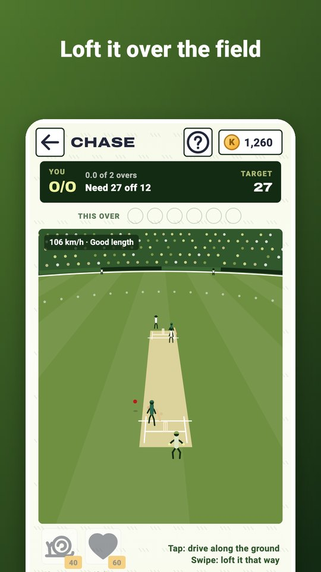
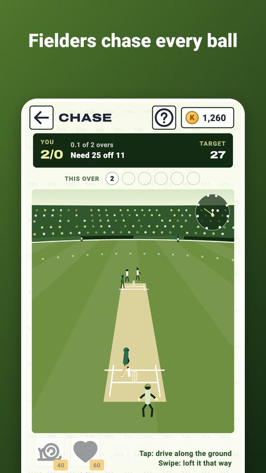
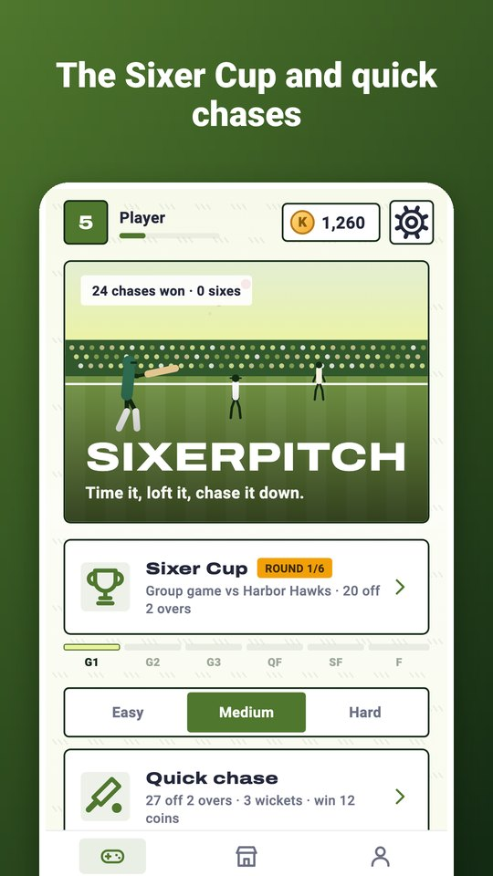
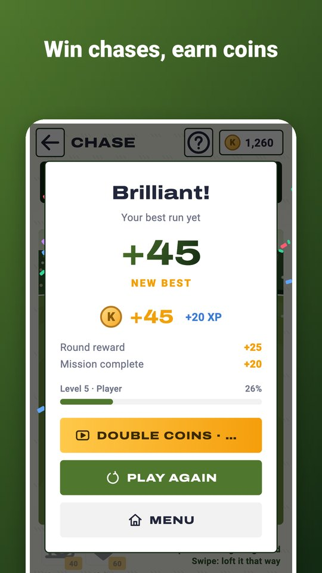
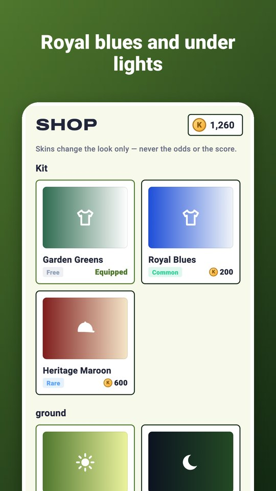

Sixerpitch puts you at the crease in a full stadium. The bowler runs in, the ball comes down the pitch — time your shot and send it to the boundary.
- Tap to drive along the ground: early goes to the leg side, late to the off side.
- Swipe to loft it where you swipe — sixes, but fielders in the deep can catch it.
- Real fielding: catches, stops, throws and running between the wickets.
- Fast, swing and spin bowlers, a new field every over and a field map to find the gaps.
- The Sixer Cup: six rounds from the group games to the final.
- Quick chases on three levels, Super over, a Daily chase and Nets practice.
- Umpire signals, flying stumps, a cheering crowd and a speed gun.
- Kits and grounds: Royal Blues, Heritage Maroon and Under Lights.